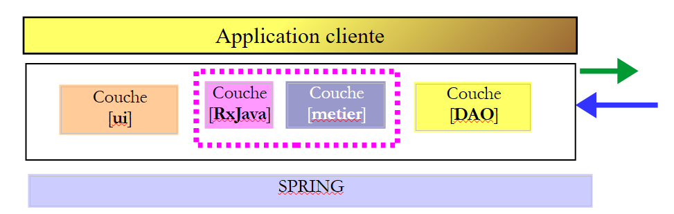
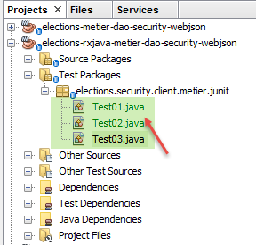

20. 使用 RxJava 进行异步编程
阅读文档：[Introduction à RxJava. Application aux environnements Swing et Android.]
在本章中，我们将回顾第 17.6 章，当时我们构建了一个具有以下架构的客户端/服务器应用程序：
 |
用户在 [1] 的 Swing 界面上执行某些操作时，会通过 HTTP [2] 网络触发 [3] 中的数据库操作。 因此，用户操作的响应可能需要较长时间才能返回。如果能在用户界面上添加一个等待指示器，并在操作耗时过长时提供取消该操作的选项，将非常理想。 在第 17.6 章中，每个需要与服务器交换信息的用户操作都是同步的。由代码执行的事件处理程序只有在收到响应后才会结束。在此期间，图形界面处于冻结状态：它不会响应用户的新操作。 这些操作会被简单地放入队列中，待当前正在执行的事件处理程序完成后再进行处理。因此，如果显示一个取消按钮，用户虽然可以点击它，但在当前操作完成之前不会发生任何变化。这样一来，取消按钮就失去了意义。
要使点击取消按钮产生效果，必须先完成当前操作。为此，它必须以异步方式启动可能耗时的操作：
- 事件处理程序启动该耗时操作，但不等待其结果，而是将控制权交还给负责管理图形界面事件的 UI 线程。该耗时操作在与 UI 不同的线程上运行，因此不会阻塞后者；
- 如果用户在长时间操作结束前点击取消按钮，处于空闲状态的 UI 线程即可处理该事件。此时可以忽略该操作的结果并终止该操作；
- 如果未取消该长时间操作，响应的到达将在 UI 线程中触发一个事件。如果该线程处于空闲状态，它将执行与该事件相关的代码来处理响应；
用户界面将如前所述运行。如果服务器响应速度快，用户不会察觉差异。如果响应时间明显较长，用户将看到一个取消按钮，并可以中断当前操作。
[Rx]库支持异步编程。其主要优势在于已移植到多种环境（Java、.NET、JS、 ……），且在某一环境中掌握的技能可轻松迁移至其他环境。本文将基于文档 [Introduction à RxJava. Application aux environnements Swing et Android] 的第 2 章展开，建议读者阅读该章节。下文将引用该章节示例中的代码。
我们将按以下方式演进应用程序的架构：
 |
- 在 [1] 中，我们在 [swing] 层与 [métier] 层之间插入 [RxJava] 层。该层的方法今后将以异步方式调用；
我们将分几个步骤进行：
- 步骤 1：目前 [metier, DAO] 层对 [ui] 层提供的是同步接口。我们将将其转换为异步层 [RxJava, metier, DAO]；
- 步骤 2：我们将把同步的控制台应用程序移植为仍保持同步但使用异步接口 [RxJava, metier, DAO] 的应用程序；
- 步骤 3：我们将同步的 Swing 应用程序移植为异步的 Swing 应用程序；
20.1. 步骤 1
我们将当前的同步层 [metier, DAO] 转换为异步层 [RxJava, metier, DAO]。
20.1.1. 创建
我们以第17.4章中的Maven项目为基础，使用NetBeans打开该项目：
 |  |
我们将该项目 [1] 复制（复制/粘贴）到一个新项目 [elections-rxjava-metier-dao-security-webjson] [2] 中。
20.1.2. Maven配置
我们修改新项目中的 [pom.xml] 文件，以添加对 [RxJava] 库的依赖：
<project xmlns="http://maven.apache.org/POM/4.0.0" xmlns:xsi="http://www.w3.org/2001/XMLSchema-instance"
xsi:schemaLocation="http://maven.apache.org/POM/4.0.0 http://maven.apache.org/xsd/maven-4.0.0.xsd">
<modelVersion>4.0.0</modelVersion>
<groupId>istia.st.elections</groupId>
<artifactId>elections-metier-dao-security-rxjava-webjson</artifactId>
<version>0.0.1-SNAPSHOT</version>
<description>Client jUnit du serveur web / jSON</description>
<name>elections-metier-dao-security-rxjava-webjson</name>
<properties>
<project.build.sourceEncoding>UTF-8</project.build.sourceEncoding>
<java.version>1.8</java.version>
</properties>
<parent>
<groupId>org.springframework.boot</groupId>
<artifactId>spring-boot-starter-parent</artifactId>
<version>1.2.7.RELEASE</version>
</parent>
<dependencies>
<!-- Spring -->
<dependency>
<groupId>org.springframework</groupId>
<artifactId>spring-web</artifactId>
</dependency>
<!-- Spring 使用的库 jSON -->
<dependency>
<groupId>com.fasterxml.jackson.core</groupId>
<artifactId>jackson-core</artifactId>
</dependency>
<dependency>
<groupId>com.fasterxml.jackson.core</groupId>
<artifactId>jackson-databind</artifactId>
</dependency>
<!-- Spring 使用的组件 RestTemplate -->
<dependency>
<groupId>org.apache.httpcomponents</groupId>
<artifactId>httpclient</artifactId>
</dependency>
<!-- Google Guava -->
<dependency>
<groupId>com.google.guava</groupId>
<artifactId>guava</artifactId>
<version>16.0.1</version>
<scope>test</scope>
</dependency>
<!-- 日志库 -->
<dependency>
<groupId>org.springframework.boot</groupId>
<artifactId>spring-boot-starter-logging</artifactId>
</dependency>
<!-- Spring Boot 测试 -->
<dependency>
<groupId>org.springframework.boot</groupId>
<artifactId>spring-boot-starter-test</artifactId>
<scope>test</scope>
</dependency>
<!-- Spring Boot -->
<dependency>
<groupId>org.springframework.boot</groupId>
<artifactId>spring-boot</artifactId>
<scope>test</scope>
</dependency>
<!-- https://mvnrepository.com/artifact/io.reactivex/rxjava -->
<dependency>
<groupId>io.reactivex</groupId>
<artifactId>rxjava</artifactId>
<version>1.2.0</version>
</dependency>
</dependencies>
<build>
<plugins>
<plugin>
<groupId>org.apache.maven.plugins</groupId>
<artifactId>maven-surefire-plugin</artifactId>
<version>2.18.1</version>
</plugin>
</plugins>
</build>
</project>
- 第 65-70 行：我们添加了对库 RxJava 的依赖；
20.1.3. [métier] 层的异步实现
 |
为了实现 [RxJava, métier] 层， 我们在项目中添加了异步接口 [IRxElectionsMetier] [1] 及其实现 [RxElectionsMetier] [2]：
 |
接口 [IRxElectionsMetier] 是 [RxJava, métier] 层的异步接口。其代码如下：
package elections.security.client.metier;
import elections.security.client.entities.ListeElectorale;
import elections.security.client.entities.User;
import rx.Observable;
public interface IRxElectionsMetier {
// 身份验证
Observable<Void> authenticate(User user);
// 获取候选名单
Observable<ListeElectorale[]> getListesElectorales(User user);
// 待选席位数
Observable<Integer> getNbSiegesAPourvoir(User user);
// 选举门槛
Observable<Double> getSeuilElectoral(User user);
// 结果登记
Observable<Void> recordResultats(User user, ListeElectorale[] listesElectorales);
// 席位计算
Observable<ListeElectorale[]> calculerSieges(User user, ListeElectorale[] listesElectorales);
}
接口 [IRxElectionsMetier] 继承了接口 [IElectionsMetier] 的方法，但与接口 [IElectionsMetier] 中方法 M 返回类型为 T 的结果不同， 而接口 [IRxElectionsMetier] 中的方法 M 返回类型为 Observable<T>。类型 [Observable] 由库 RxJava 提供。 Observable<T> 类型提供了 [subscribe] 方法，该方法将异步获取类型 T。该方法关联了三个事件：
- onSuccess(T result)，用于通知类型为 T 的结果已可用。该异步操作可能返回多个结果；
- onError(Throwable th)：通知异步操作遇到错误；
- onCompleted()，用于通知异步操作已完成；
只要未调用方法 [Observable.subscribe]，与该可观察对象关联的异步操作就不会被触发。 调用 [IRxElectionsMetier] 接口中方法 M 的代码不会直接获得预期结果 T，而是获得一个 Observable<T> 类型，该类型允许其后续通过调用方法 [Observable.subscribe] 来获取结果 T。
接口 [IRxElectionsMetier] 的实现 [RxElectionsMetier] 如下：
package elections.security.client.metier;
import elections.security.client.entities.ListeElectorale;
import elections.security.client.entities.User;
import org.springframework.beans.factory.annotation.Autowired;
import org.springframework.stereotype.Component;
import rx.Observable;
@Component
public class RxElectionsMetier implements IRxElectionsMetier {
@Autowired
private IElectionsMetier metier;
@Override
public Observable<Void> authenticate(User user) {
...
}
@Override
public Observable<ListeElectorale[]> getListesElectorales(User user) {
return Observable.create(subscriber -> {
try {
// 调用同步方法，随后向订阅者返回响应
subscriber.onNext(metier.getListesElectorales(user));
// 报告可观察对象结束
subscriber.onCompleted();
} catch (Exception e) {
// 转发异常
subscriber.onError(e);
}
});
}
@Override
public Observable<Integer> getNbSiegesAPourvoir(User user) {
...
}
@Override
public Observable<Double> getSeuilElectoral(User user) {
...
}
@Override
public Observable<Void> recordResultats(User user, ListeElectorale[] listesElectorales) {
...
}
@Override
public Observable<ListeElectorale[]> calculerSieges(User user, ListeElectorale[] listesElectorales) {
...
}
}
- 第 12-13 行：同步业务层的 Spring 注入；
- 第 20-34 行：我们将注释掉方法 [getListesElectorales]，该方法不再返回类型 [ListeElectorale[]]，而是返回类型 [Observable<ListeElectorale[]>]；
- 第 22-32 行：静态方法 [Observable.create] 允许基于类型 [Subscriber] 创建一个 Observable。 类型 [Subscriber] 代表被观察进程（即 Observable）所生成结果流的订阅者。它提供了三个方法：
- [Subscriber.onNext]（第 25 行）用于接收被观察进程的结果；
- [Subscriber.onError]（第 30 行）用于接收被观察进程的异常。发生异常后，类型 [Observable] 将不再发布结果；
- [Subscriber.onCompleted]（第 27 行）用于接收被观察进程的发布结束信号。在此示例中，被观察进程仅发布一个元素。需要注意的是，若发生异常，则不会发出此信号。这是 Observables 的默认行为：抛出异常同时也标志着发布结束。 订阅者对此心知肚明；
- 第22-34行：方法[Observable.create]的参数类型为[Observable.OnSubscribe]。该类型是一种函数式接口。这一概念随Java 8引入，指代仅包含一个方法的接口。 在此，接口 [Observable.OnSubscribe] 的唯一方法如下：
要实现一个具有单个方法 m(param1, param2, ..., paramn) 的函数式接口，可以使用以下简化语法：
第 22-34 行就是这样实现的：
- [subscriber] 是方法 [Observable.OnSubscribe.call] 的参数；
- 第 23-32 行：要赋予方法 [call] 的代码；
- 第25行：以同步方式向第13行注入的[métier]层请求选民名册。因此需要等待结果。当结果接收后，将传递给订阅者的[onNext]方法；
- 第28行：若发生错误，异常将传递给订阅者的[onError]方法；
- 第31行：仅等待一个结果。当该结果获得（选民名册或异常）时，通知订阅者被观察的过程已停止输出结果；
请务必注意，方法 [RxElectionsMetier] 返回的是 Observable<ListeElectorale[]> 类型，而非 ListeElectorale[] 类型本身。 调用方必须调用方法 Observable<ListeElectorale[]>.subscribe，才能执行第 23-33 行代码，并通过第 25 行返回选民名单。
其他方法的代码与此类似：
package elections.security.client.metier;
import elections.security.client.entities.ListeElectorale;
import elections.security.client.entities.User;
import org.springframework.beans.factory.annotation.Autowired;
import org.springframework.stereotype.Component;
import rx.Observable;
@Component
public class RxElectionsMetier implements IRxElectionsMetier {
@Autowired
private IElectionsMetier metier;
@Override
public Observable<Void> authenticate(User user) {
return Observable.create(subscriber -> {
try {
// 调用同步方法
metier.authenticate(user);
// 通知可观察对象结束
subscriber.onCompleted();
} catch (Exception e) {
// 转发异常
subscriber.onError(e);
}
});
}
@Override
public Observable<ListeElectorale[]> getListesElectorales(User user) {
return Observable.create(subscriber -> {
try {
// 调用同步方法，然后向订阅者返回响应
subscriber.onNext(metier.getListesElectorales(user));
// 报告可观察对象结束
subscriber.onCompleted();
} catch (Exception e) {
// 转发异常
subscriber.onError(e);
}
});
}
@Override
public Observable<Integer> getNbSiegesAPourvoir(User user) {
return Observable.create(subscriber -> {
try {
// 调用同步方法，然后向订阅者返回响应
subscriber.onNext(metier.getNbSiegesAPourvoir(user));
// 报告可观察对象结束
subscriber.onCompleted();
} catch (Exception e) {
// 转发异常
subscriber.onError(e);
}
});
}
@Override
public Observable<Double> getSeuilElectoral(User user) {
return Observable.create(subscriber -> {
try {
// 调用同步方法，然后向订阅者返回响应
subscriber.onNext(metier.getSeuilElectoral(user));
// 报告可观察对象结束
subscriber.onCompleted();
} catch (Exception e) {
// 转发异常
subscriber.onError(e);
}
});
}
@Override
public Observable<Void> recordResultats(User user, ListeElectorale[] listesElectorales) {
return Observable.create(subscriber -> {
try {
// 调用同步方法
metier.recordResultats(user, listesElectorales);
// 通知可观察对象结束
subscriber.onCompleted();
} catch (Exception e) {
// 转发异常
subscriber.onError(e);
}
});
}
@Override
public Observable<ListeElectorale[]> calculerSieges(User user, ListeElectorale[] listesElectorales) {
return Observable.create(subscriber -> {
try {
// 调用同步方法，然后向订阅者返回响应
subscriber.onNext(metier.calculerSieges(user, listesElectorales));
// 报告可观察对象结束
subscriber.onCompleted();
} catch (Exception e) {
// 转发异常
subscriber.onError(e);
}
});
}
}
- 第 20 行和第 81 行：订阅器的 [onNext] 方法未被调用，因为该订阅器不期望返回结果；
20.1.4. [métier] 层的 JUnit 测试
 |
20.1.4.1. Test01
我们重新审视第 17.4.4 节中讨论的单元测试 [Test01]。该测试原本设计用于对接口 [IElectionsMetier] 进行同步调用。 我们将该测试修改为对新接口 [IRxElectionsMetier] 进行同步调用。实际上，可以对异步接口 RxJava 进行同步调用。代码如下：
package elections.security.client.metier.junit;
import org.junit.Assert;
import org.junit.BeforeClass;
import org.junit.Test;
import org.junit.runner.RunWith;
import org.springframework.beans.factory.annotation.Autowired;
import org.springframework.boot.test.SpringApplicationConfiguration;
import org.springframework.test.context.junit4.SpringJUnit4ClassRunner;
import com.fasterxml.jackson.core.JsonProcessingException;
import com.fasterxml.jackson.databind.ObjectMapper;
import elections.security.client.config.MetierConfig;
import elections.security.client.entities.ElectionsException;
import elections.security.client.entities.ListeElectorale;
import elections.security.client.entities.User;
import elections.security.client.metier.IRxElectionsMetier;
import rx.observables.BlockingObservable;
@SpringApplicationConfiguration(classes = MetierConfig.class)
@RunWith(SpringJUnit4ClassRunner.class)
public class Test01 {
// [electionsMetier] 层
@Autowired
private IRxElectionsMetier electionsMetier;
// 映射器 jSON
private final ObjectMapper mapper = new ObjectMapper();
// 用户
static private User admin;
static private User user;
static private User unknown;
@BeforeClass
public static void initTest() {
admin = new User("admin", "admin");
user = new User("user", "user");
unknown = new User("x", "y");
}
@Test()
public void checkUserUser() {
ElectionsException se = null;
try {
BlockingObservable.from(electionsMetier.authenticate(user)).firstOrDefault(null);
} catch (ElectionsException e) {
se = e;
}
Assert.assertNotNull(se);
Assert.assertEquals("403 Forbidden", se.getErreurs().get(0));
}
@Test()
public void checkUserUnknown() {
ElectionsException se = null;
try {
BlockingObservable.from(electionsMetier.authenticate(unknown)).firstOrDefault(null);
} catch (ElectionsException e) {
se = e;
}
Assert.assertNotNull(se);
Assert.assertEquals("401 Unauthorized", se.getErreurs().get(0));
}
@Test()
public void checkUserAdmin() {
ElectionsException se = null;
try {
BlockingObservable.from(electionsMetier.authenticate(admin)).firstOrDefault(null);
} catch (ElectionsException e) {
se = e;
}
Assert.assertNull(se);
}
/**
* vérification 1 : méthode de calcul des sièges on fixe en dur les listes
*/
@Test
public void calculSieges1() {
// 创建包含7个候选名单的表格
ListeElectorale[] listes = new ListeElectorale[7];
listes[0] = new ListeElectorale("A", 32000, 0, false);
listes[1] = new ListeElectorale("B", 25000, 0, false);
listes[2] = new ListeElectorale("C", 16000, 0, false);
listes[3] = new ListeElectorale("D", 12000, 0, false);
listes[4] = new ListeElectorale("E", 8000, 0, false);
listes[5] = new ListeElectorale("F", 4500, 0, false);
listes[6] = new ListeElectorale("G", 2500, 0, false);
// 计算各候选名单的席位
listes = BlockingObservable.from(electionsMetier.calculerSieges(admin, listes)).first();
// 验证结果
Assert.assertEquals(2, listes[0].getSieges());
Assert.assertFalse(listes[0].isElimine());
Assert.assertEquals(2, listes[1].getSieges());
Assert.assertFalse(listes[1].isElimine());
Assert.assertEquals(1, listes[2].getSieges());
Assert.assertFalse(listes[2].isElimine());
Assert.assertEquals(1, listes[3].getSieges());
Assert.assertFalse(listes[3].isElimine());
Assert.assertEquals(0, listes[4].getSieges());
Assert.assertFalse(listes[4].isElimine());
Assert.assertEquals(0, listes[5].getSieges());
Assert.assertTrue(listes[5].isElimine());
Assert.assertEquals(0, listes[6].getSieges());
Assert.assertTrue(listes[6].isElimine());
}
/**
* vérification 2 : méthode de calcul des sièges on demande les listes à la couche [metier] puis on fixe en dur les
* voix
*/
@Test
public void calculSieges2() {
// 创建7个候选名单的表格
ListeElectorale[] listes = BlockingObservable.from(electionsMetier.getListesElectorales(admin)).first();
// 固定票数
listes[0].setVoix(32000);
listes[1].setVoix(25000);
listes[2].setVoix(16000);
listes[3].setVoix(12000);
listes[4].setVoix(8000);
listes[5].setVoix(4500);
listes[6].setVoix(2500);
// 计算各候选名单获得的席位
listes = BlockingObservable.from(electionsMetier.calculerSieges(admin, listes)).first();
// 验证结果
Assert.assertEquals(2, listes[0].getSieges());
Assert.assertFalse(listes[0].isElimine());
Assert.assertEquals(2, listes[1].getSieges());
Assert.assertFalse(listes[1].isElimine());
Assert.assertEquals(1, listes[2].getSieges());
Assert.assertFalse(listes[2].isElimine());
Assert.assertEquals(1, listes[3].getSieges());
Assert.assertFalse(listes[3].isElimine());
Assert.assertEquals(0, listes[4].getSieges());
Assert.assertFalse(listes[4].isElimine());
Assert.assertEquals(0, listes[5].getSieges());
Assert.assertTrue(listes[5].isElimine());
Assert.assertEquals(0, listes[6].getSieges());
Assert.assertTrue(listes[6].isElimine());
}
/**
* vérification 3 méthode de calcul des sièges on provoque une exception
*/
@Test(expected = ElectionsException.class)
public void calculSieges3() {
// 创建一个包含24个候选名单的表格，每个名单各有一票
ListeElectorale[] listes = new ListeElectorale[25];
// 这25个候选名单将获得相同数量的选票（4%）
for (int i = 0; i < listes.length; i++) {
listes[i] = new ListeElectorale("Liste" + (i + 1), 1, 0, false);
}
// 席位计算——通常应得到 ElectionsException
// 选举门槛为5%
BlockingObservable.from(electionsMetier.calculerSieges(admin, listes)).first();
}
/**
* enregistrement des résultats de l'élection
*
* @throws JsonProcessingException
*/
@Test
public void ecritureResultatsElections() throws JsonProcessingException {
// 生成包含7个候选名单的表格
ListeElectorale[] listes = BlockingObservable.from(electionsMetier.getListesElectorales(admin)).first();
// 将得票数固定
listes[0].setVoix(32000);
listes[1].setVoix(25000);
listes[2].setVoix(16000);
listes[3].setVoix(12000);
listes[4].setVoix(8000);
listes[5].setVoix(4500);
listes[6].setVoix(2500);
// 计算各候选名单获得的席位
listes = BlockingObservable.from(electionsMetier.calculerSieges(admin, listes)).first();
// 显示结果
for (int i = 0; i < listes.length; i++) {
System.out.println(mapper.writeValueAsString(listes[i]));
}
// 将结果保存至数据库
BlockingObservable.from(electionsMetier.recordResultats(admin, listes)).firstOrDefault(null);
// 验证结果
listes = BlockingObservable.from(electionsMetier.getListesElectorales(admin)).first();
// 显示结果
for (int i = 0; i < listes.length; i++) {
System.out.println(mapper.writeValueAsString(listes[i]));
}
Assert.assertEquals(2, listes[0].getSieges());
Assert.assertFalse(listes[0].isElimine());
Assert.assertEquals(2, listes[1].getSieges());
Assert.assertFalse(listes[1].isElimine());
Assert.assertEquals(1, listes[2].getSieges());
Assert.assertFalse(listes[2].isElimine());
Assert.assertEquals(1, listes[3].getSieges());
Assert.assertFalse(listes[3].isElimine());
Assert.assertEquals(0, listes[4].getSieges());
Assert.assertFalse(listes[4].isElimine());
Assert.assertEquals(0, listes[5].getSieges());
Assert.assertTrue(listes[5].isElimine());
Assert.assertEquals(0, listes[6].getSieges());
Assert.assertTrue(listes[6].isElimine());
}
}
让我们来看看这些修改：
- 第 48 行：静态方法 [BlockingObservable.from(Observable).first]：
- 订阅了 [from] 的可观察参数；
- 触发与该可观察对象关联的代码执行；
- 等待接收第一个结果。因此这是一项同步操作；
此处使用方法 [firstOrDefault(null)]，是因为可观察对象 [metier.authenticate] 在执行时不会返回结果。 因此，方法 [firstOrDefault(null)] 的结果将是 null，此处该值未被利用；
在后续代码中，每当需要调用 [métier] 层时，我们都会采用这种模式。
单元测试 [Test01] 必须通过：
 |
待办事项：验证测试 [Test01] 是否通过。
20.1.4.2. Test02
我们将测试 [Test01] 进行改造，以便通过对其方法进行异步调用，来测试异步接口 [IRxElectionsMetier]。
让我们先研究一个测试：
// 线程同步信号量
private CountDownLatch latch;
// -----------------------------------
private ElectionsException checkUserUserException;
@Test()
public void checkUserUser() throws InterruptedException {
// 信号量值为1
latch = new CountDownLatch((1));
// 异步操作
electionsMetier.authenticate(user).subscribeOn(Schedulers.io())
.subscribe((result) -> {
},
(th) -> {
checkUserUserException = (ElectionsException) th;
latch.countDown();
},
() -> {
latch.countDown();
});
// 等待信号量
latch.await();
// 验证结果
Assert.assertNotNull(checkUserUserException);
Assert.assertEquals("403 Forbidden", checkUserUserException.getErreurs().get(0));
}
- 第 2 行：信号量是一种用于在线程之间进行同步的工具。线程是并行执行的执行流。 为了执行任务 T1，线程 [Thread1] 可能需要由线程 [Thread2] 执行的任务 T2 先完成。 因此，它会等待线程 [Thread2] 向其发送信号，表明任务 T2 已结束。管理两个线程之间的这种同步有多种方法。此处采用的方法如下：
- 第 10 行：线程 [Thread1] 创建一个初始值为 1 的信号量；
- 第 12 行：线程 [Thread1] 创建并启动线程 [Thread2]。通过以下语法实现：
electionsMetier.authenticate(user).subscribeOn(Schedulers.io())
方法 [Observable.subscribeOn] 指定了将要执行被观察进程的线程。 [subscribeOn] 的参数是一个线程池。RxJava 库提供了多个适用于不同场景的线程池。[Schedulers.io()] 线程池是建议用于网络操作的；
- （续）
- 第 12-13 行：操作
electionsMetier.authenticate(user).subscribeOn(Schedulers.io()).subscribe(...)
操作执行了封装在可观察对象 [authenticate(user)] 中的同步操作。 但由于该同步操作是在与线程 [Thread1] 不同的线程上启动的，因此后者不会等待方法 [subscribe] 的响应，而是直接跳转到下一条指令；
- （续）
- 第 23 行：线程 [Thread1] 暂停并等待信号量变为 0（当前值为 1）；
- 第13-21行：方法[subscribe]接受三个lambda函数作为参数：
- 第一个 [(result)->{...}] 函数会在可观察对象 [authenticate(user)] 每次发布结果 [result] 时被调用。这里有一个可观察对象 [authenticate(user)]，它执行某些操作但不会发布任何结果。 因此，lambda 表达式 [(result)->{}] 将永远不会被调用。这就是为什么它的代码在此处为空 [{}]；
- 第二个 [(th)->{...}] 接收类型为 [Throwable] 的参数。当可观察对象的执行遇到异常时，它会被调用。在此，我们按以下方式处理参数 [Throwable th]：
- 第 16 行：我们将它存储在类型为 [ElectionsException] 的测试类的一个字段中，因为被执行的可观察对象只抛出这种类型的异常；
- 第 17 行：我们将信号量置为 0，以表示线程 [Thread2] 已完成工作；
- 当可观察对象不再有元素可发布时，将调用第三个 [()->{...}]。我们按以下方式处理此事件：
- 第 20 行：我们将信号量置为 0，以表示线程 [Thread2] 已完成工作；
需要注意的是，如果发生异常，第三个 lambda 表达式将不会被调用。因此，我们不得不也在第 17 行将信号量置为 0；
- 第 25 行：当执行到这一行时，可观察对象已完成工作。此时可以进行与测试 [Test01] 中相同的检查；
让我们再看一个测试：
// -----------------------------------
private ElectionsException calculSieges1Exception;
private ListeElectorale[] listesCalculSieges1;
@Test
public void calculSieges1() throws InterruptedException {
// 创建包含7个候选列表的数组
ListeElectorale[] listes = new ListeElectorale[7];
listes[0] = new ListeElectorale("A", 32000, 0, false);
listes[1] = new ListeElectorale("B", 25000, 0, false);
listes[2] = new ListeElectorale("C", 16000, 0, false);
listes[3] = new ListeElectorale("D", 12000, 0, false);
listes[4] = new ListeElectorale("E", 8000, 0, false);
listes[5] = new ListeElectorale("F", 4500, 0, false);
listes[6] = new ListeElectorale("G", 2500, 0, false);
// 信号量设为1
latch = new CountDownLatch((1));
// 异步操作
// 计算各候选名单的席位
electionsMetier.calculerSieges(admin, listes).subscribeOn(Schedulers.io())
.subscribe((result) -> {
listesCalculSieges1 = result;
},
(th) -> {
calculSieges1Exception = (ElectionsException) th;
latch.countDown();
},
() -> {
latch.countDown();
});
// 等待信号量
latch.await();
// 验证结果
Assert.assertNull(calculSieges1Exception);
Assert.assertEquals(2, listesCalculSieges1[0].getSieges());
Assert.assertFalse(listesCalculSieges1[0].isElimine());
Assert.assertEquals(2, listesCalculSieges1[1].getSieges());
Assert.assertFalse(listesCalculSieges1[1].isElimine());
Assert.assertEquals(1, listesCalculSieges1[2].getSieges());
Assert.assertFalse(listesCalculSieges1[2].isElimine());
Assert.assertEquals(1, listesCalculSieges1[3].getSieges());
Assert.assertFalse(listesCalculSieges1[3].isElimine());
Assert.assertEquals(0, listesCalculSieges1[4].getSieges());
Assert.assertFalse(listesCalculSieges1[4].isElimine());
Assert.assertEquals(0, listesCalculSieges1[5].getSieges());
Assert.assertTrue(listesCalculSieges1[5].isElimine());
Assert.assertEquals(0, listesCalculSieges1[6].getSieges());
Assert.assertTrue(listesCalculSieges1[6].isElimine());
}
- 第20-30行：异步执行可观察对象 [electionsMetier.calculerSieges(admin, listes)]；
- 第 21-23 行：可观察对象的执行返回类型 [ListeElectorale[]]，将其存储在测试类的字段中（第 3 行）；
- 第34-48行：这些验证来自测试[Test01]，其中添加了第34行的验证，用于确保未发生异常；
完整的 [Test02] 测试可在课程资料中找到。
待完成任务：运行测试 [Test02] 并验证其通过情况。
20.1.4.3. Test03
测试 [Test03] 与测试 [Test01] 功能相同：它通过向接口 [IRxElectionsMetier] 发出同步调用，对该接口进行测试。 这是对测试 [Test02] 的复制，仅有两处细节不同：
- 可观察对象不再在与执行测试的线程不同的线程中执行。 当线程 [Thread1] 调用某个可观察对象的 [subscribe] 方法时，该方法会在 [Thread1] 线程上向服务器发起 HTTP 操作。 此时，整个 [subscribe] 方法都变成了同步的；
- 由于只剩一个线程，线程同步变得不再必要，信号量随之消失；
以下是两个测试示例：
// -----------------------------------
private ElectionsException checkUserUserException;
@Test()
public void checkUserUser() throws InterruptedException {
// 同步操作
electionsMetier.authenticate(user)
.subscribe((result) -> {
},
(th) -> {
checkUserUserException = (ElectionsException) th;
},
() -> {
});
// 验证结果
Assert.assertNotNull(checkUserUserException);
Assert.assertEquals("403 Forbidden", checkUserUserException.getErreurs().get(0));
}
- 第 7 行：默认情况下，方法 [electionsMetier.authenticate(user).subscribe] 在调用代码的线程中执行。因此这是一次同步操作；
// -----------------------------------
private ElectionsException calculSieges1Exception;
private ListeElectorale[] listesCalculSieges1;
@Test
public void calculSieges1() throws InterruptedException {
// 创建包含7个候选名单的数组
ListeElectorale[] listes = new ListeElectorale[7];
listes[0] = new ListeElectorale("A", 32000, 0, false);
listes[1] = new ListeElectorale("B", 25000, 0, false);
listes[2] = new ListeElectorale("C", 16000, 0, false);
listes[3] = new ListeElectorale("D", 12000, 0, false);
listes[4] = new ListeElectorale("E", 8000, 0, false);
listes[5] = new ListeElectorale("F", 4500, 0, false);
listes[6] = new ListeElectorale("G", 2500, 0, false);
// 同步操作
// 计算各候选名单的席位
electionsMetier.calculerSieges(admin, listes)
.subscribe((result) -> {
listesCalculSieges1 = result;
},
(th) -> {
calculSieges1Exception = (ElectionsException) th;
},
() -> {
});
// 核对结果
Assert.assertNull(calculSieges1Exception);
Assert.assertEquals(2, listesCalculSieges1[0].getSieges());
Assert.assertFalse(listesCalculSieges1[0].isElimine());
Assert.assertEquals(2, listesCalculSieges1[1].getSieges());
Assert.assertFalse(listesCalculSieges1[1].isElimine());
Assert.assertEquals(1, listesCalculSieges1[2].getSieges());
Assert.assertFalse(listesCalculSieges1[2].isElimine());
Assert.assertEquals(1, listesCalculSieges1[3].getSieges());
Assert.assertFalse(listesCalculSieges1[3].isElimine());
Assert.assertEquals(0, listesCalculSieges1[4].getSieges());
Assert.assertFalse(listesCalculSieges1[4].isElimine());
Assert.assertEquals(0, listesCalculSieges1[5].getSieges());
Assert.assertTrue(listesCalculSieges1[5].isElimine());
Assert.assertEquals(0, listesCalculSieges1[6].getSieges());
Assert.assertTrue(listesCalculSieges1[6].isElimine());
}
待完成任务：通过 [Test03] 测试，并验证其通过情况。
20.2. 步骤 2
现在，我们将第 17.5 章中的同步控制台应用程序移植为一个仍然是同步的应用程序，但使用异步接口 [RxJava, metier, DAO]；
 |
我们以第17.5章中的项目[elections-console-metier-dao-security-webjson] [1]为基础，将其复制到新项目[elections-console-rxjava- metier-dao-security-webjson] [2]中：
 |  |
- 在 [3-4] 中，新项目中删除了对旧的同步层 [métier] 的依赖；
 |  |
- 在 [5-9] 中，添加对新异步层 [métier] 的依赖；
 |  |
- 在 [10-14] 中，将类 [ElectionsConsole] 重命名为 [ElectionsConsole01]；
同样，将类 [BootElectionsConsole] 重命名为 [BootElectionsConsole01]：
 |
类 [BootElectionsConsole01] 的当前代码如下：
package elections.security.client.boot;
import elections.security.client.console.IElectionsUI;
public class BootElectionsConsole01 extends AbstractBootElections{
public static void main(String[] arguments) {
new BootElectionsConsole01().run();
}
@Override
protected IElectionsUI getUI() {
return ctx.getBean("electionsConsole",IElectionsUI.class);
}
}
- 第 13 行：由于已将类 [ElectionsConsole] 重命名为 [ElectionsConsole01]，因此现在应写为：
return ctx.getBean("electionsConsole01",IElectionsUI.class);
让我们回到类 [ElectionsConsole01] 的代码：
@Component
public class ElectionsConsole01 implements IElectionsUI {
@Autowired
private IElectionsMetier electionsMetier;
@Autowired
private User admin;
@Override
public void run() {
// 参选名单
ListeElectorale[] listes;
// 数据录入
try (Scanner clavier = new Scanner(System.in)) {
// 向图层 [metier] 查询参选名单
listes = electionsMetier.getListesElectorales(admin);
...
// 计算席位
listes=electionsMetier.calculerSieges(admin,listes);
// 记录结果
electionsMetier.recordResultats(admin,listes);
...
}
如果参照第 20.1.4.1 节中 [Test01] 测试的示例，第 5、17、20 和 22 行将按以下方式调整：
@Component
public class ElectionsConsole01 implements IElectionsUI {
@Autowired
private IRxElectionsMetier electionsMetier;
@Autowired
private User admin;
@Override
public void run() {
// 竞争名单
ListeElectorale[] listes;
// 数据录入
try (Scanner clavier = new Scanner(System.in)) {
// 向图层 [metier] 查询参选名单
listes = BlockingObservable.from(electionsMetier.getListesElectorales(admin)).first();
...
// 计算席位
listes = BlockingObservable.from(electionsMetier.calculerSieges(admin, listes)).first();
// 保存结果
BlockingObservable.from(electionsMetier.recordResultats(admin, listes));
...
}
待完成任务：配置项目以使用三个参数 [SS, Heures travaillées, Jours travaillés] 执行类 [BootElectionsConsole01]，并验证如此配置后的项目执行是否产生预期结果。
任务：配置项目以执行组合 [BootElectionsConsole02, ElectionsConsole02]，其中类 [ElectionsConsole02] 应参照第 20.1.4.2 节中测试 [Test02] 的模板编写。
任务：配置项目以执行组合 [BootElectionsConsole03, ElectionsConsole03]，其中类 [ElectionsConsole03] 应参照第 20.1.4.3 节中测试 [Test03] 的模板编写。
20.3. 步骤 3
现在我们将开始将 Swing 应用程序移植到异步环境中。
 |
首先，我们将第 17.6 章中的项目 [elections-swing-metier-dao-security-webjson] [1] 复制到新项目 [elections-swing-rxjava-metier-dao-security-webjson] [2] 中：
 |  |
- 在 [3, 4] 中，我们删除了对 [console] 同步层的依赖；
 |  |
- 在 [5-9] 中，我们添加了对异步控制台层的依赖；
[swing] 层将向 [métier] 层发起真正的异步调用。在调用该层的方法时，将存在两个线程：
- UI 的线程，负责处理事件；
- 一个 I/O 线程，负责向服务器执行 HTTP 调用；
在整个异步调用过程中，我们应显示一张等待图片以及一个取消按钮。此处我们暂不实现该功能，这将作为应用程序的改进建议提供给您。修改将在调用 [métier] 层的两个类中进行：
 |
20.3.1. Maven 配置
这里我们将使用 [RxSwing] 库，该库为 [RxJava] 库添加了仅在 Swing 环境中可用的一些功能。为此，我们将按以下方式修改 [pom.xml] 文件：
<project xmlns="http://maven.apache.org/POM/4.0.0" xmlns:xsi="http://www.w3.org/2001/XMLSchema-instance"
xsi:schemaLocation="http://maven.apache.org/POM/4.0.0 http://maven.apache.org/xsd/maven-4.0.0.xsd">
<modelVersion>4.0.0</modelVersion>
<groupId>istia.st.elections</groupId>
<artifactId>elections-swing-rxjava-metier-dao-security-webjson</artifactId>
<version>0.0.1-SNAPSHOT</version>
<name>elections-swing-rxjava-metier-dao-security-webjson</name>
<description>couche swing asynchrone du client web / jSON</description>
<properties>
<project.build.sourceEncoding>UTF-8</project.build.sourceEncoding>
<java.version>1.8</java.version>
<maven.compiler.source>1.8</maven.compiler.source>
<maven.compiler.target>1.8</maven.compiler.target>
</properties>
<dependencies>
<!-- RxSwing -->
<!-- https://mvnrepository.com/artifact/io.reactivex/rxswing -->
<dependency>
<groupId>io.reactivex</groupId>
<artifactId>rxswing</artifactId>
<version>0.27.0</version>
</dependency>
<!-- 底层 -->
<dependency>
<groupId>istia.st.elections</groupId>
<artifactId>elections-console-rxjava-metier-dao-security-webjson</artifactId>
<version>0.0.1-SNAPSHOT</version>
</dependency>
</dependencies>
</project>
20.3.2. [ElectionsConnectForm] 类
在异步运行中，[ElectionsConnectForm] 类变为如下形式：
package elections.security.client.swing;
import elections.security.client.console.IElectionsUI;
import elections.security.client.entities.User;
import java.awt.Dimension;
import java.awt.Toolkit;
import javax.swing.SwingUtilities;
import elections.security.client.metier.IRxElectionsMetier;
import org.springframework.beans.factory.annotation.Autowired;
import org.springframework.stereotype.Component;
import rx.schedulers.Schedulers;
import rx.schedulers.SwingScheduler;
@Component
public class ElectionsConnectForm extends AbstractElectionsConnectForm implements IElectionsUI {
private static final long serialVersionUID = 1L;
// 关于异步层的参考 [métier]
@Autowired
private IRxElectionsMetier metier;
// 已登录用户
private User user;
// 主表单
@Autowired
private ElectionsMainForm electionsMainForm;
// 会话 UI
@Autowired
private UiSession uiSession;
@Override
protected void doConnect() {
if (isPageValid()) {
// 用户身份验证
metier.authenticate(user).subscribeOn(Schedulers.io()).observeOn(SwingScheduler.getInstance()).subscribe(
// 无响应
(result) -> {
},
// 异常处理
(th) -> {
// 记录错误
String info = getInfoForException("Les erreurs suivantes se sont produites :", th);
// 显示信息
jTextPaneErreurs.setText(info);
jTextPaneErreurs.setCaretPosition(0);
},
// 身份验证完成
() -> {
// 将用户存储在会话中
uiSession.setUser(user);
// 隐藏登录视图
setVisible(false);
// 显示主视图
electionsMainForm.run();
});
}
}
// 初始化
@Override
protected void init() {
...
}
@Override
public void run() {
// 显示图形界面
SwingUtilities.invokeLater(new Runnable() {
public void run() {
init();
setVisible(true);
}
});
}
private boolean isPageValid() {
...
}
private String getInfoForException(String message, Throwable ex) {
...
}
}
- 第 36-63 行：当用户点击菜单选项 [Connexion] 时，将执行方法 [doConnect]：
 |
关键在于第40行：
metier.authenticate(user).subscribeOn(Schedulers.io()).observeOn(SwingScheduler.getInstance()).subscribe(...)
- 被观察的进程是 [metier.authenticate(user)]；
- 它将在从 [Schedulers.io()] 池中获取的 I/O 线程上执行；
- 该进程将在 UI 线程中被观察到，该线程负责管理 Swing 接口 [observeOn(SwingScheduler.getInstance())] 的事件。 该线程由方法 [SwingScheduler.getInstance()] 获取，其中 [SwingScheduler] 是 [RxSwing] 库提供的类。这是强制要求的。 获取异步操作的结果后，该结果通常用于修改 Swing 界面的元素。但该界面只能在 UI 的线程中进行修改，否则会引发异常。 因此，第41至61行必须在UI线程中执行。此处通过[observeOn(SwingScheduler.getInstance())]方法确保了这一点；
下面对剩余代码进行说明：
- 第42-43行：这些行是为了符合[subscribe]方法的语法规范。它们永远不会被执行，因为[metier.authenticate(user)]进程不会返回任何结果；
- 第35-52行：接收到异常时，会将其显示出来；
- 第 54-61 行：当 [metier.authenticate(user)] 进程报告其输出结束时执行；
20.3.3. 班级 [ElectionsMainForm]
|
20.3.3.1. 图形用户界面的初始化
package elections.security.client.swing;
import elections.security.client.console.IElectionsUI;
import elections.security.client.entities.ListeElectorale;
import elections.security.client.entities.User;
import elections.security.client.metier.IRxElectionsMetier;
import org.springframework.beans.factory.annotation.Autowired;
import org.springframework.stereotype.Component;
import rx.schedulers.Schedulers;
import rx.schedulers.SwingScheduler;
import javax.swing.*;
import java.awt.*;
import java.util.ArrayList;
import java.util.List;
@Component
public class ElectionsMainForm extends AbstractElectionsMainForm implements IElectionsUI {
private static final long serialVersionUID = 1L;
// 关于异步层 [métier] 的参考
@Autowired
private IRxElectionsMetier metier;
// 会话 UI
@Autowired
private UiSession uiSession;
// 已登录用户
private User user;
// 列表模板 JList
private DefaultListModel<String> modèleNomsVoix = null;
private DefaultListModel<String> modèleRésultats = null;
// 竞争列表
private ListeElectorale[] listes;
// 用户输入的列表
private final List<ListeElectorale> listesSaisies = new ArrayList<>();
private ListeElectorale[] tListesSaisies;
// 初始化
@Override
protected void init() {
// 由父类生成组件
super.init();
// 表单状态
Utilitaires.setEnabled(new JLabel[]{jLabelAjouter, jLabelCalculer, jLabelEnregistrer, jLabelSupprimer}, false);
Utilitaires.setEnabled(
new JMenuItem[]{jMenuItemAjouter, jMenuItemCalculer, jMenuItemEnregistrer, jMenuItemSupprimer}, false);
// 窗口居中
Dimension screenSize = Toolkit.getDefaultToolkit().getScreenSize();
Dimension frameSize = getSize();
if (frameSize.height > screenSize.height) {
frameSize.height = screenSize.height;
}
if (frameSize.width > screenSize.width) {
frameSize.width = screenSize.width;
}
setLocation((screenSize.width - frameSize.width) / 2, (screenSize.height - frameSize.height) / 2);
// 已登录用户
user = uiSession.getUser();
// 本地初始化
modèleNomsVoix = new DefaultListModel<>();
jListNomsVoix.setModel(modèleNomsVoix);
modèleRésultats = new DefaultListModel<>();
jListResultats.setModel(modèleRésultats);
// 向 [métier] 层请求列表
metier.getListesElectorales(user).subscribeOn(Schedulers.io()).observeOn(SwingScheduler.getInstance())
.subscribe(
// 响应
listesElectorales -> {
// 存储列表
listes = listesElectorales;
},
// 异常
(th) -> showException(th),
// 可观察结束
() -> {
// 下一步
doInitStep2();
});
}
...
- 第 46 行：当关联的窗口即将显示时，将执行方法 [init]。该方法旨在初始化以下 [1-3] 组件：
 |
- 第 71-85 行：异步请求候选列表（组件 [1]）；
- 第 71 行：被观察的进程是 [metier.getListesElectorales(user)]。它在 I/O 线程 [subscribeOn(Schedulers.io())] 上执行，并在 UI 和 [observeOn(SwingScheduler.getInstance()] 线程上被观察；
- 第 74-77 行：被观察进程返回的结果存储在第 38 行的 [listes] 字段中；
- 第 79 行：任何异常均通过以下方法处理：
private void showException(Throwable th) {
// 显示异常
jTextPaneMessages.setText(getInfoForException("Les erreurs suivantes se sont produites : ", th));
jTextPaneMessages.setCaretPosition(0);
}
- 第81-84行：在被观察进程结束时，执行第81-84行。若发生异常，则不执行这些行。方法[doInitStep2]通过以下方式完成初始化的第2步：
private void doInitStep2() {
// 将列表名称与下拉列表关联jComboBoxNomsListes
for (int i = 0; i < listes.length; i++) {
jComboBoxNomsListes.addItem(String.format("%s - %s", listes[i].getId(), listes[i].getNom()));
}
// 待填补席位数
metier.getNbSiegesAPourvoir(user).subscribeOn(Schedulers.io()).observeOn(SwingScheduler.getInstance())
.subscribe(
// 响应
nbSiegesAPourvoir -> {
// 初始化与该信息关联的标签
jLabelSAP.setText(jLabelSAP.getText() + nbSiegesAPourvoir);
},
// 异常
(th) -> showException(th),
// 可观察结束
() -> {
// 下一步
doInitStep3();
});
}
- 第3-5行：利用上一步的结果，将候选名单的名称填入下拉列表中；
- 第 7-20 行：以异步方式查询待填补席位数；
- 第 7 行：被监视的进程是 [metier.getNbSiegesAPourvoir(user)]。该进程在 I/O 线程 [subscribeOn(Schedulers.io())] 上运行，并在 UI 和 [observeOn(SwingScheduler.getInstance()] 线程上进行监视；
- 第10-13行：使用进程返回的结果来更新图形用户界面；
- 第 15 行：显示可能出现的异常；
- 第17-20行：接收到可观察对象的结束信号后，进入初始化过程的第3步；
初始化步骤3由以下代码实现：
private void doInitStep3() {
// 选举门槛
metier.getSeuilElectoral(user).subscribeOn(Schedulers.io()).observeOn(SwingScheduler.getInstance())
.subscribe(
// 回复
seuilElectoral -> {
// 初始化与该信息相关的标签
jLabelSE.setText(jLabelSE.getText() + seuilElectoral);
},
// 异常
(th) -> showException(th),
// 可观测结束
() -> {
});
}
- 第3-4行：异步请求选举阈值；
- 第3行：被观察的进程是[metier.getSeuilElectoral(user)]。它在I/O线程[subscribeOn(Schedulers.io())]上运行，并在UI和[observeOn(SwingScheduler.getInstance()]线程上被观察；
- 第6-9行：使用进程返回的结果来更新图形用户界面；
- 第 11 行：显示可能出现的异常；
- 第13-14行：接收到可观察对象的结束信号时，不执行任何操作：图形界面的初始化过程已结束；
20.3.3.2. 计算各候选名单获得的席位
方法 [doCalculer] 的功能是计算各候选名单获得的席位数：
@Override
protected void doCalculer() {
tListesSaisies = listesSaisies.toArray(new ListeElectorale[0]);
// 计算席位
String info = null;
metier.calculerSieges(user, tListesSaisies).subscribeOn(Schedulers.io()).observeOn(SwingScheduler.getInstance())
.subscribe(
// 处理结果
result -> consumeResultSieges(result),
// 异常处理
th -> showException(th),
// 可观察结束
() -> {
}
);
}
- 第 6-15 行：异步计算各候选名单获得的席位；
- 第 6 行：被观察的进程是 [metier.calculerSieges(user, tListesSaisies)]。它在 I/O 线程 [subscribeOn(Schedulers.io())] 上执行，并在 UI 和 [observeOn(SwingScheduler.getInstance()] 线程上被观察；
- 第 9 行：该进程返回的结果被 [consumeResultSieges] 方法使用；
- 第 11 行：显示可能出现的异常；
- 第13-14行：接收到可观察对象的结束信号时，不执行任何操作；
第 9 行，方法 [consumeResultSieges] 利用被观察进程返回的结果，更新候选列表及其字段 [sieges, elimine]：
private void consumeResultSieges(ListeElectorale[] tListesSaisies) {
// 保存结果
this.tListesSaisies = tListesSaisies;
// 显示结果
modèleRésultats.clear();
for (int i = 0; i < tListesSaisies.length; i++) {
modèleRésultats.addElement(tListesSaisies[i].toString());
}
// 更新表单状态
Utilitaires.setEnabled(new JLabel[]{jLabelEnregistrer}, true);
Utilitaires.setEnabled(new JLabel[]{jLabelCalculer}, false);
Utilitaires.setEnabled(new JMenuItem[]{jMenuItemEnregistrer}, true);
Utilitaires.setEnabled(new JMenuItem[]{jMenuItemCalculer}, false);
jTextPaneMessages.setText("Calcul terminé");
}
- 第4-14行：利用所得结果更新图形用户界面；
20.3.3.3. 选举结果的记录
选举结果的记录通过以下方法 [doEnregistrer] 完成：
@Override
protected void doEnregistrer() {
// 向 [métier] 层请求保存
metier.recordResultats(user, tListesSaisies).subscribeOn(Schedulers.io()).observeOn(SwingScheduler.getInstance())
.subscribe(
// 处理结果 - 此处无结果
(param) -> {
},
// 异常处理
(th) -> showException(th),
// 可观察结束
() -> {
// 表单更新
Utilitaires.setEnabled(new JLabel[]{jLabelEnregistrer}, false);
Utilitaires.setEnabled(new JMenuItem[]{jMenuItemEnregistrer}, false);
jTextPaneMessages.setText("Enregistrement des résultats réalisé");
}
);
}
- 第4-17行：以异步方式记录选举结果；
- 第 4 行：被监视的进程是 [metier.recordResultats(user, tListesSaisies)]。它在 I/O 线程 [subscribeOn(Schedulers.io())] 上执行，并在 UI 和 [observeOn(SwingScheduler.getInstance()] 线程上进行监视；
- 第7-8行：这些行永远不会被执行，因为被监视的进程不返回结果；
- 第 10 行：显示可能出现的异常；
- 第 14-16 行：接收到可观察对象的结束信号后，更新图形界面；
待完成任务：验证Swing应用程序是否正常运行。随后改进图形界面和代码，确保在与Web服务器/jSON进行异步操作时，会显示加载图标以及取消当前操作的选项。